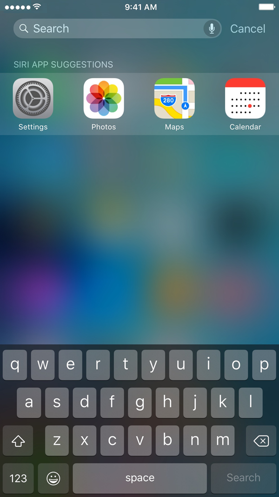
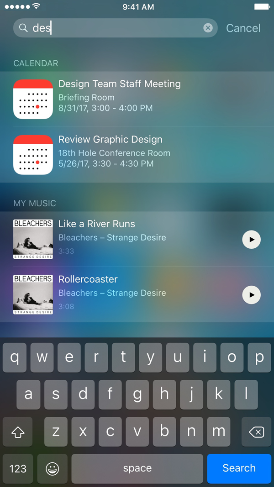

Searching with Spotlight
Many apps include a search field in which you can type to find something that the app knows about. With Spotlight, you can search all apps at once.
Practice
Practice the following steps on your iOS device:
- Drag down anywhere on the Home screen to reveal the search field. (Dragging from the top opens Notifications.) 
- Enter text in the search field. Search results appear as you type, grouped by category. 
- Tap an item in the list to open it.
Using your resources and the iOS device you have, try to determine what types of information Spotlight lets you search for.
Click here for the answer.
Spotlight can locate apps, music, contacts, and many more types of information. See knowledge base article HT201285, "Use Search on your iPhone, iPad, or iPod touch".